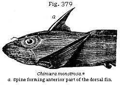
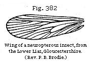

The Student’s Elements of Geology
Mineral Character of Lias. — Numerous successive Zones in the Lias, marked by distinct Fossils, without Unconformity in the Stratification, or Change in the Mineral Character of the Deposits. — Gryphite Limestone. — Shells of the Lias. — Fish of the Lias. — Reptiles of the Lias. — Ichthyosaur and Plesiosaur. — Marine Reptile of the Galapagos Islands. — Sudden Destruction and Burial of Fossil Animals in Lias. — Fluvio-marine Beds in Gloucestershire, and Insect Limestone. — Fossil Plants. — The origin of the Oolite and Lias, and of alternating Calcareous and Argillaceous Formations.
Lias.—The English provincial name of Lias has been very generally adopted for a formation of argillaceous limestone, marl, and clay, which forms the base of the Oolite, and is classed by many geologists as part of that group. The peculiar aspect which is most characteristic of the Lias in England, France, and Germany, is an alternation of thin beds of blue or grey limestone, having a surface which becomes light-brown when weathered, these beds being separated by dark-coloured, narrow argillaceous partings, so that the quarries of this rock, at a distance, assume a striped and ribbon-like appearance.
The Lias has been divided in England into three groups, the Upper, Middle, and Lower. The Upper Lias consists first of sands, which were formerly regarded as the base of the Oolite, but which, according to Dr. Wright, are by their fossils more properly referable to the Lias; secondly, of clay shale and thin beds of limestone. The Middle Lias, or marl-stone series, has been divided into three zones; and the Lower Lias, according to the labours of Quenstedt, Oppel, Strickland, Wright, and others, into seven zones, each marked by its own group of fossils. This Lower Lias averages from 600 to 900 feet in thickness.
From Devon and Dorsetshire to Yorkshire all these divisions, observes Professor Ramsay, are constant; and from top to bottom we can not assert that anywhere there is actual unconformity between any two subdivisions, whether of the larger or smaller kind.
In the whole of the English Lias there are at present known about 937 species of mollusca, and of these 267 are Cephalopods, of which class more than two-thirds are Ammonites,
the Nautilus and Belemnite also abounding. The whole series has been divided by zones characterised by particular Ammonites; for while other families of shells pass from one division to another in numbers varying from about 20 to 50 per cent, these cephalopods are almost always limited to single zones, as Quenstedt and Oppel have shown for Germany, and Dr. Wright and others for England.
As no actual unconformity is known from the top of the Upper to the bottom of the Lower Lias, and as there is a marked uniformity in the mineral character of almost all the strata, it is somewhat difficult to account even for such partial breaks as have been alluded to in the succession of species, if we reject the hypothesis that the old species were in each case destroyed at the close of the deposition of the rocks containing them, and replaced by the creation of new forms when the succeeding formation began. I agree with Professor Ramsay in not accepting this hypothesis. No doubt some of the old species occasionally died out, and left no representatives in Europe or elsewhere; others were locally exterminated in the struggle for life by species which invaded their ancient domain, or by varieties better fitted for a new state of things. Pauses also of vast duration may have occurred in the deposition of strata, allowing time for the modification of organic life throughout the globe, slowly brought about by variation accompanied by extinction of the original forms.
Fossils of the Lias.—The name of Gryphite limestone has sometimes been applied to the Lias, in consequence of the great number of shells which it contains of a species of oyster, or Gryphæa (Fig. 362). A large heavy shell called
Hippopodium (Fig. 365), allied to Cypricardia, is also characteristic of the upper part of the Lower Lias. In this formation occur also the Aviculas, Figs. 363 and 364. The Lias formation is also remarkable for being the newest of the secondary rocks in which brachiopoda of the genera Spirifer and Leptæna (Figs. 366, 367) occur, although the former is slightly modified in structure so as to constitute the subgenus Spiriferina, Davidson, and the Leptæna has dwindled to a shell smaller in size than a pea. No less than eight or nine species of Spiriferina are enumerated by Mr. Davidson as belonging to the Lias. Palliobranchiate mollusca predominate greatly in
strata older than the Trias; but, so far as we yet know, they did not survive the Liassic epoch.
Allusion has already been made, p. 354, to numerous zones in the Lias having each their peculiar Ammonites. Two of these occur near the base of the Lower Lias, having a united thickness, varying from 40 to 80 feet. The upper of these is characterised by Ammonites Bucklandi, and the lower by Ammonites planorbis (see Figs. 368, 369).* Sometimes, however, there is a third intermediate zone, that of Ammonites angulatus, which is the equivalent of the zone called the infra-lias on the Continent, the species of which are for the
* Quart. Journ., vol. xvi, p. 376.
most part common to the superior group marked by Ammonites Bucklandi.
Among the Crinoids or Stone-lilies of the Lias, the Pentacrinites are conspicuous. (See Fig. 373.) Of Palæocoma (Ophioderma) Egertoni (Fig. 374), referable to the Ophiuridæ of Muller, perfect specimens have been met with in the Middle Lias beds of Dorset and Yorkshire.
The Extracrinus Briareus (removed by Major Austin from Pentacrinus on account of generic differences) occurs in tangled masses, forming thin beds of considerable extent, in the Lower Lias of Dorset, Gloucestershire, and Yorkshire. The remains are often highly charged with pyrites. This Crinoid, with its innumerable tentacular arms, appears to have been frequently attached to the driftwood of the liassic sea, in the same manner as Barnacles float about on wood at the present day. There is another species of Extracrinus and several of
Pentacrinus in the Lias; and the latter genus is found in nearly all the formations from the Lias to the London Clay inclusive. It is represented in the present seas by the delicate and rare Pentacrinus caput-medusæ of the Antilles, which, with Comatula, is one of the few surviving members of the ancient family of the Crinoids, represented by so many extinct genera in the older formations.
Fishes of the Lias.—The fossil fish, of which there are no less than 117 species known as British, resemble generically those of the Oolite, but differ, according to M. Agassiz, from those of the Cretaceous period. Among them is a species of Lepidotus (L. gigas, Agassiz), Fig. 375, which is found in the Lias of England, France, and Germany.* This genus was before mentioned (p. 316) as occurring in the Wealden, and is supposed to have frequented both rivers and sea-coasts. Another genus of Ganoids (or fish with hard, shining, and enamelled scales), called Æchmodus (Fig. 376), is almost exclusively Liassic. The teeth of a species of Acrodus, also, are very abundant in the Lias (Fig. 377).
* Agassiz, Poissons Fossiles, vol. ii, tab. 28, 29.
But the remains of fish which have excited more attention than any others are those large bony spines called ichthyodorulites (a, Figure 378), which were once supposed by some naturalists to be jaws, and by others weapons, resembling those of the living Balistes and Silurus; but which M. Agassiz has shown to be neither the one nor the other. The spines, in the genera last mentioned, articulate with the backbone, whereas there are no signs of any such articulation in the ichthyodorulites.
These last appear to have been bony spines which formed the anterior part of the dorsal fin, like that of the living genera Cestracion and Chimæra (see a, Figure 379). In both of these genera, the posterior concave face is armed with small spines, as in that of the fossil Hybodus (Fig. 378), a placoid fish of the shark family found fossil at Lyme Regis. Such spines are simply imbedded in the flesh, and attached to strong muscles. “They serve,” says Dr. Buckland, “as in the Chimæra (Fig. 379), to raise and depress the fin, their action
* Agassiz, Poissons Fossiles, vol. iii, tab. C, Fig. 1.
resembling that of a movable mast, raising and lowering backward the sail of a barge.”*
Reptiles of the Lias.—It is not, however, the fossil fish which form the most striking feature in the organic remains of the Lias; but the Enaliosaurian reptiles, which are extraordinary for their number, size, and structure. Among the most singular of these are several species of Ichthyosaurus and Plesiosaurus (Figs. 380, 381). The genus Ichthyosaurus, or fish-lizard, is not confined to this formation, but has been found in strata as high as the White Chalk of England, and as low as the Trias of Germany, a formation which immediately succeeds the Lias in the descending order. It is evident from their fish-like vertebræ, their paddles, resembling those of a porpoise or whale, the length of their tail, and other parts of their structure, that the Ichthyosaurs were aquatic. Their jaws and teeth show that they were carnivorous; and the half-digested remains of fishes and reptiles, found within their skeletons, indicate the precise nature of their food.
Mr. Conybeare was enabled, in 1824, after examining many skeletons nearly perfect, to give an ideal restoration of the osteology of this genus, and of that of the Plesiosaurus.† (See Figs. 380, 381.) The latter animal had an extremely long neck and small head, with teeth like those of the crocodile, and paddles analogous to those of the Ichthyosaurus, but larger. It is supposed to have lived in shallow seas and estuaries, and to have breathed air like the Ichthyosaur and our modern cetacea.‡ Some of the reptiles above mentioned were of formidable dimensions. One specimen of Ichthyosaurus platydon, from the Lias at Lyme, now in the British Museum, must have belonged to an animal more than 24 feet in length; and there are species of Plesiosaurus which measure from 18 to 20 feet in length. The form of the Ichthyosaurus may have fitted it to cut through the waves like the porpoise; as it was furnished besides its paddles with a tail-fin so constructed as to be a powerful organ of motion; but it is supposed that the Plesiosaurus, at least the long-necked species (Fig. 381), was better suited to fish in shallow creeks and bays defended from heavy breakers.
It is now very generally agreed that these extinct saurians must have inhabited the sea; and it was urged that as there are now chelonians, like the tortoise, living in fresh water,
* Bridgewater Treatise, p. 290.
† Geol. Soc. Transactions, Second Series, vol. i, p. 49.
‡ Conybeare and De la Beche, Geol. Trans., First Series,
vol. v, p. 559; and Buckland, Bridgewater Treatise, p. 203.
and others, as the turtle, frequenting the ocean, so there may have been formerly some saurians proper to salt, others to fresh water. The common crocodile of the Ganges is well-known to frequent equally that river and the brackish and salt water near its mouth; and crocodiles are said in like manner to be abundant both in the rivers of the Isla de
Pinos (Isle of Pines), south of Cuba, and in the open sea round the coast. In 1835 a curious lizard (Amblyrhynchus cristatus) was discovered by Mr. Darwin in the Galapagos Islands.* It was found to be exclusively marine, swimming easily by means of its flattened tail, and subsisting chiefly on seaweed. One of them was sunk from the ship by a heavy weight, and on being drawn up after an hour was quite unharmed.
The families of Dinosauria, crocodiles, and Pterosauria or winged reptiles, are also represented in the Lias.
Sudden Destruction of Saurians.—It has been remarked, and truly, that many of the fish and saurians, found fossil in the Lias, must have met with sudden death and immediate burial; and that the destructive operation, whatever may have been its nature, was often repeated.
“Sometimes,” says Dr. Buckland, “scarcely a single bone or scale has been removed from the place it occupied during life; which could not have happened had the uncovered bodies of these saurians been left, even for a few hours, exposed to putrefaction, and to the attacks of fishes and other smaller animals at the bottom of the sea.”† Not only are the skeletons of the Ichthyosaurs entire, but sometimes the contents of their stomachs still remain between their ribs, as before remarked, so that we can discover the particular species of fish on which they lived, and the form of their excrements. Not unfrequently there are layers of these coprolites, at different depths in the Lias, at a distance from any entire skeletons of the marine lizards from which they were derived; “as if,” says Sir H. De la Beche, “the muddy bottom of the sea received small sudden accessions of matter from time to time, covering up the coprolites and other exuviæ which had accumulated during the intervals.”‡ It is further stated that, at Lyme Regis, those surfaces only of the coprolites which lay uppermost at the bottom of the sea have suffered partial decay, from the action of water before they were covered and protected by the muddy sediment that has afterwards permanently enveloped them.
Numerous specimens of the Calamary or pen-and-ink fish, (Geoteuthis bollensis) have also been met with in the Lias at Lyme, with the ink-bags still distended, containing the ink in a dried state, chiefly composed of carbon, and but slightly impregnated with carbonate of lime. These Cephalopoda, therefore, must, like the saurians, have been soon buried in
* See Darwin, Naturalist’s Voyage, p. 385.
Murray.
† Bridgewater Treatise, p. 115.
‡ Geological Researches, p. 334.
sediment; for, if long exposed after death, the membrane containing the ink would have decayed.*
As we know that river-fish are sometimes stifled, even in their own element, by muddy water during floods, it can not be doubted that the periodical discharge of large bodies of turbid fresh water in the sea may be still more fatal to marine tribes. In the “Principles of Geology” I have shown that large quantities of mud and drowned animals have been swept down into the sea by rivers during earthquakes, as in Java in 1699; and that indescribable multitudes of dead fishes have been seen floating on the sea after a discharge of noxious vapours during similar convulsions. But in the intervals between such catastrophes, strata may have accumulated slowly in the sea of the Lias, some being formed chiefly of one description of shell, such as ammonites, others of gryphites.
Fresh-water Deposits.—Insect-beds.—From the above remarks the reader will infer that the Lias is for the most part a marine deposit. Some members, however, of the series have an estuarine character, and must have been formed within the influence of rivers. At the base of the Upper and Lower Lias respectively, insect-beds appear to be almost everywhere present throughout the Midland and South-western districts of England. These beds are crowded with the remains of insects, small fish, and crustaceans, with occasional marine shells. One band in Gloucestershire, rarely exceeding a foot in thickness, has been named the “insect limestone.” It passes upward, says the Reverend P. B. Brodie,† into a shale containing Cypris and Estheria, and is full of the wing-cases of several genera of Coleoptera, with some nearly entire beetles, of which the eyes are preserved. The nervures of the wings of neuropterous insects (Figure 382) are beautifully perfect in this bed. Ferns, with Cycads and leaves of monocotyledonous plants, and some apparently brackish and fresh-water shells, accompany the insects in several places, while in others marine shells predominate, the fossils varying apparently as we examine the bed nearer or farther from the ancient land, or the source whence the fresh water was derived. After studying 300 specimens of these insects from the Lias, Mr. Westwood declares that they comprise both
* Buckland, Bridgewater Treatise, p. 307.
† A History of Fossil Insects, etc., 1846. London.
wood-eating and herb-devouring beetles, of the Linnean genera Elater, Carabus, etc., besides grasshoppers (Gryllus), and detached wings of dragon-flies and may-flies, or insects referable to the Linnean genera Libellula, Ephemera, Hemerobius, and Panorpa, in all belonging to no less than twenty-four families. The size of the species is usually small, and such as taken alone would imply a temperate climate; but many of the associated organic remains of other classes must lead to a different conclusion.
Fossil Plants.—Among the vegetable remains of the Lias, several species of Zamia have been found at Lyme Regis, and the remains of coniferous plants at Whitby. M. Ad. Brongniart enumerates forty-seven liassic acrogens, most of them ferns; and fifty gymnosperms, of which thirty-nine are cycads, and eleven conifers. Among the cycads the predominance of Zamites, and among the ferns the numerous genera with leaves having reticulated veins (as in Fig. 349), are mentioned as botanical characteristics of this era.* The absence as yet from the Lias and Oolite of all signs of dicotyledonous angiosperms is worthy of notice. The leaves of such plants are frequent in tertiary strata, and occur in the Cretaceous, though less plentifully (see p. 303). The angiosperms seem, therefore, to have been at the least comparatively rare in these older secondary periods, when more space was occupied by the Cycads and Conifers.
Origin of the Oolite and Lias.—The entire group of Oolite and Lias consists of repeated alternations of clay, sandstone, and limestone, following each other in the same order. Thus the clays of the Lias are followed by the sands now considered (see p. 353) as belonging to the same formation, though formerly referred to the Inferior Oolite, and these sands again by the shelly and coralline limestone called the Great or Bath Oolite. So, in the Middle Oolite, the Oxford Clay is followed by calcareous grit and coral rag; lastly, in the Upper Oolite, the Kimmeridge Clay is followed by the Portland Sand and limestone (see Fig. 298).† The clay beds, however, as Sir H. de la Beche remarks, can be followed over larger areas than the sand or sandstones.‡ It should also be remembered that while the Oolite system becomes arenaceous and resembles a coal-field in Yorkshire, it assumes in the Alps an almost purely calcareous form, the sands and clays being omitted; and even in the intervening tracts it is more complicated and variable than appears in ordinary descriptions.
* Tableau des Vég. Foss., 1849, p. 105.
† Conybeare and Philips’s Outlines, etc., p. 166.
‡ Geological Researches, p. 337.
Nevertheless, some of the clays and intervening limestones do retain, in reality, a pretty uniform character for distances of from 400 to 600 miles from east to west and north to south.
In order to account for such a succession of events, we may imagine, first, the bed of the ocean to be the receptacle for ages of fine argillaceous sediment, brought by oceanic currents, which may have communicated with rivers, or with part of the sea near a wasting coast. This mud ceases, at length, to be conveyed to the same region, either because the land which had previously suffered denudation is depressed and submerged, or because the current is deflected in another direction by the altered shape of the bed of the ocean and neighbouring dry land. By such changes the water becomes once more clear and fit for the growth of stony zoophytes. Calcareous sand is then formed from comminuted shell and coral, or, in some cases, arenaceous matter replaces the clay; because it commonly happens that the finer sediment, being first drifted farthest from coasts, is subsequently overspread by coarse sand, after the sea has grown shallower, or when the land, increasing in extent, whether by upheaval or by sediment filling up parts of the sea, has approached nearer to the spots first occupied by fine mud.
The increased thickness of the limestones in those regions, as in the Alps and Jura, where the clays are comparatively thin, arises from the calcareous matter having been derived from species of corals and other organic beings which live in clear water, far from land, to the growth of which the influx of mud would be unfavourable. Portions therefore of these clays and limestones have probably been formed contemporaneously to a greater extent than we can generally prove, for the distinctness of the species of organic beings would be caused by the difference of conditions between the more littoral and the more pelagic areas and the different depths and nature of the sea-bottom. Independently of those ascending and descending movements which have given rise to the superposition of the limestones and clays, and by which the position of land and sea are made in the course of ages to vary, the geologist has the difficult task of allowing for the contemporaneous thinning out in one direction and thickening in another, of the successive organic and inorganic deposits of the same era.
{kind=link}
{kind=link}